八卦山大仏/彰化
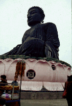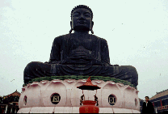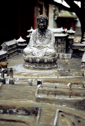
台中の南、彰化の町外れ、八卦山の上におわす大仏。隣に大きい公園などに家族連れなどが繰り出し結構賑やか。お約束の新婚さんの写真撮影もあちこちでおこなわれている。
境内も大仏さんを囲むように屋台や土産物屋などがあり繁盛している様子。
ピンクの蓮華座のうえに座る黒い大仏さん、顔が結構男前。高さは21.6メートル。
下から見上げると鼻の穴から明かりが洩れているのが見えた。こりゃあ頭部まで行けるゾ、と思い早速内部へ。蓮華座部分横から中に入る。薄暗い内部と対照的なきらびやかな仏像が祀られており、壁や天井の洋風な装飾がちょっと怪し気なクラシックホテルのような雰囲気。
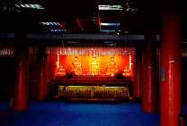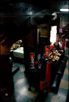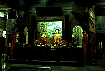
で、内陣横の象さんに支えられた階段を昇る。
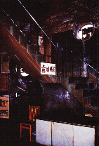
2階から5階まではお釈迦サマの偉業紹介コーナーなのだがこれがパノラマ人形スタイルで、各層変化があって大変面白い。最上階まで行くのに飽きさせないこの趣向、このサービス精神、日本の大仏＆大観音経営者もぜひ見習って欲しいものである。
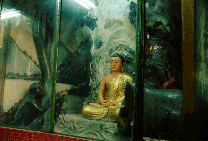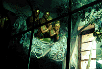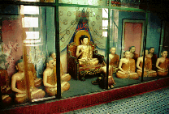
そして最上階へ・・・階段を昇りきったところに鉄格子が嵌められており中には入れない。しかし格子越しに見える正面の壁にある4つの穴が何であるかを悟った時、そこが最上階だということが分った。
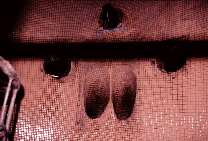
その4つの穴とは目と鼻の穴なのである。
恐らく以前はこんな鉄格子などなかったであろう。想像するに、鼻の穴から下を覗き込んで落ちた奴がいるね、多分。2つの目の穴の上には照明がある。暗くなると眉間から光を発するのだろう。凄い。
サービス満点の大仏さんであった・・・・しかしこの八卦山これだけではおわらないのだ。(南天宮編に続く）
次のスポットへGO!
台湾大仏列伝のページへ
珍寺大道場 HOME